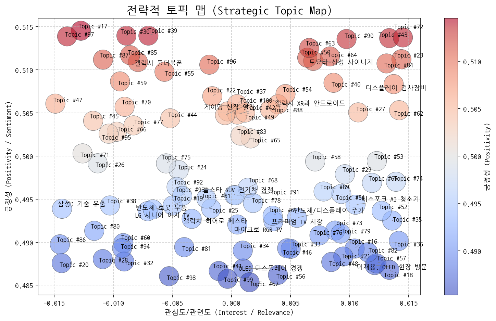
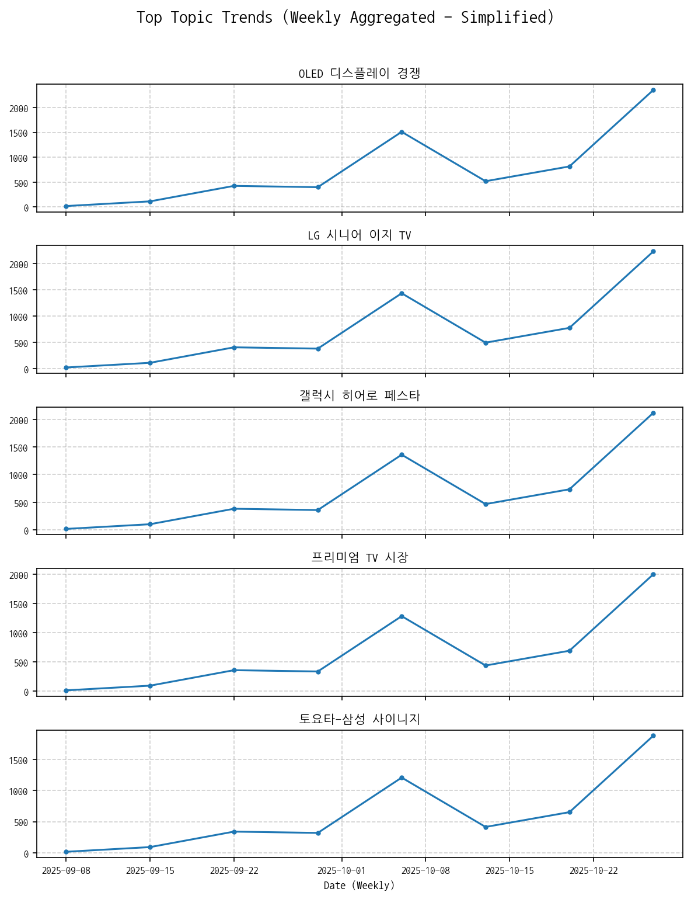
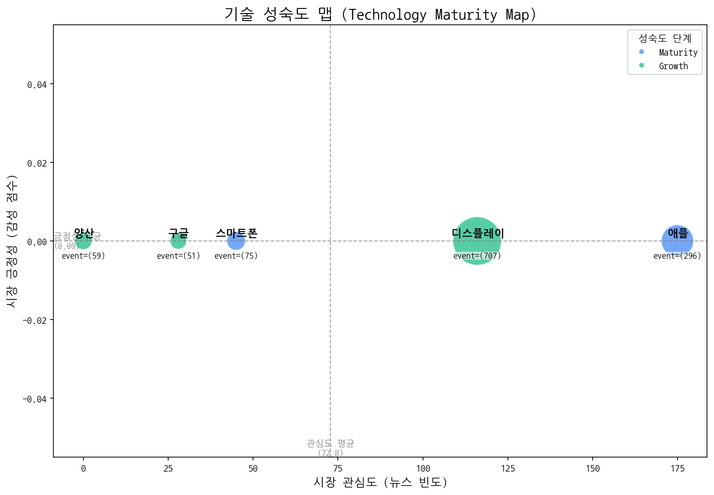
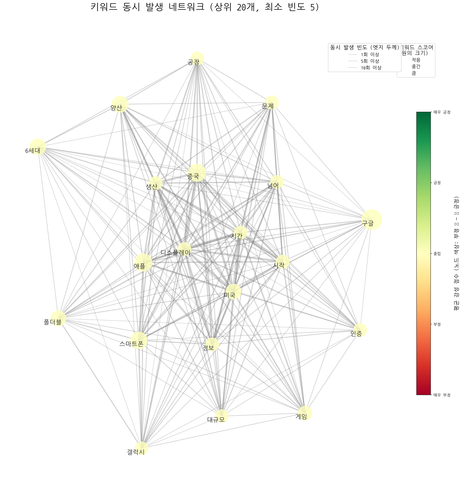
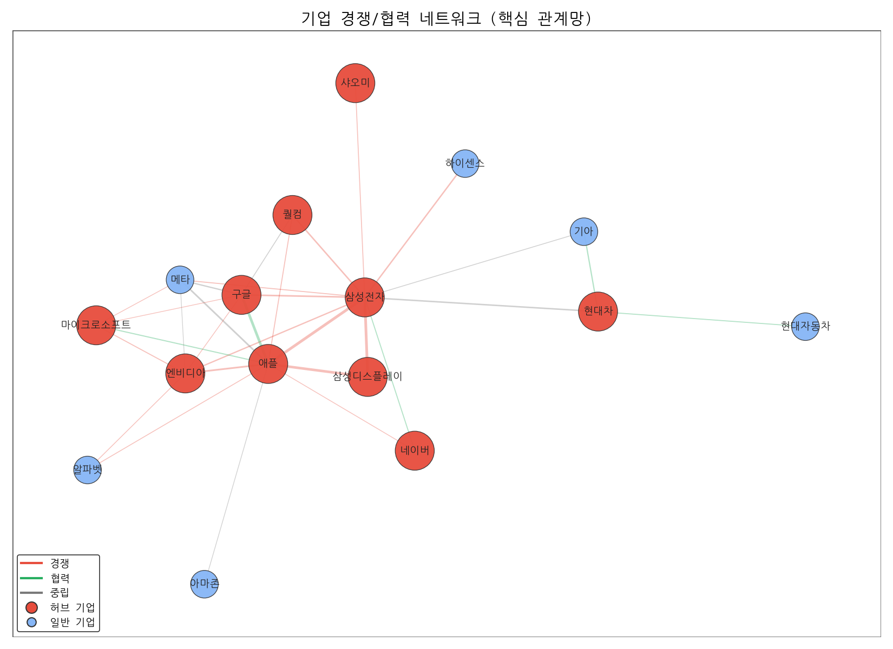
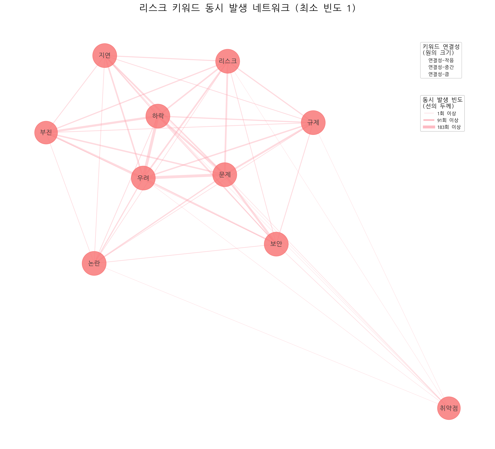
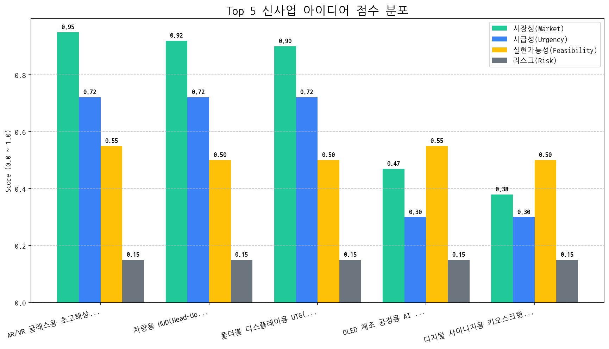

작성일: 2024년 5월 16일
작성자: [당신 이름], CSO
OLED 디스플레이 경쟁 심화: OLED 디스플레이 기술 경쟁이 더욱 치열해지고 있으며, 특히 삼성전자와 애플 간의 경쟁 관계가 더욱 공고해지고 있습니다. 이는 프리미엄 디스플레이 시장에서의 경쟁 우위를 확보하기 위한 양사의 노력이 가속화되고 있음을 시사합니다.
타겟 고객 다변화: LG 시니어 이지 TV 사례에서 보듯, 특정 연령대나 특수 고객층을 위한 맞춤형 제품 및 서비스에 대한 수요가 증가하고 있습니다. 이는 시장 세분화 및 고객 맞춤형 전략의 중요성이 더욱 커지고 있음을 의미합니다.
미래 디스플레이 기술 경쟁 본격화: AR/VR 글래스용 초고해상도 Micro-OLED on Silicon 패널이 최우선 신사업 아이디어로 부상한 것은 차세대 디스플레이 기술 경쟁이 본격화되고 있음을 보여줍니다. 특히 몰입형 경험을 위한 디스플레이 기술 개발의 중요성이 강조되고 있습니다.
기회 요인:
위협 요인:
차세대 OLED 기술 로드맵 구체화 및 투자 확대: AR/VR, 차량용 디스플레이 등 미래 시장을 겨냥한 차세대 OLED 기술 개발 로드맵을 구체화하고, 핵심 기술 확보를 위한 투자 및 인력 확보를 최우선적으로 추진합니다. 특히 Micro-OLED on Silicon 패널 개발에 대한 집중 투자가 필요합니다.
고객 맞춤형 제품 포트폴리오 확장: 고령층, 특정 취미를 가진 고객 등 세분화된 시장을 위한 맞춤형 제품 및 서비스 개발을 확대합니다. 고객 데이터를 기반으로 니즈를 정확히 파악하고, 차별화된 가치를 제공할 수 있는 제품 및 서비스 개발에 집중합니다. 시장조사, 고객 인터뷰, 프로토타입 테스트 등을 통해 고객 피드백을 적극적으로 반영합니다.
AR/VR 생태계 파트너십 강화: AR/VR 관련 기업 및 연구 기관과의 협력을 강화하여 기술 경쟁력을 확보하고, 시장 생태계를 구축합니다. AR/VR 글래스 제조사, 콘텐츠 개발사, 플랫폼 제공사 등과의 파트너십을 통해 시너지를 창출하고, 시장을 선도할 수 있는 기회를 모색합니다.


네, 시장 전략 컨설턴트로서 주어진 데이터를 분석하고, 4분면 분석과 함께 핵심 토픽 선정 및 액션 아이템을 제안해 드리겠습니다.
중요: LLM 해석 실패로 요약 정보가 없는 토픽들은 분석에서 제외했습니다. 따라서 분석은 제공된 요약 정보가 있는 토픽에 한정됩니다. 긍정성/관심도는 주관적인 판단에 의해 할당되므로, 실제 데이터와 다를 수 있습니다.
[선정된 '기회' 토픽명]: LG 시니어 이지 TV
[선정된 '위험' 토픽명]: 삼성D 기술 유출
| 토픽 | 요약 | 핵심 키워드 |
|---|---|---|
| OLED 디스플레이 경쟁 | 한국과 중국의 OLED 디스플레이 기술 경쟁 심화, 특히 애플 아이폰17의 패널 변화 및 AI 기술 적용 관련 동향 분석. LCD 기술과의 비교 포함. | oled, 중국, 디스플레이 |
| LG 시니어 이지 TV | LG전자가 시니어를 위한 이지 TV를 출시하고 관련 헬프 기능 등을 제공하는 것에 대한 뉴스입니다. | 시니어, 이지, lg |
| 갤럭시 히어로 페스타 | 갤럭시 시리즈 할인 행사. 군인을 포함한 모든 고객에게 할인 혜택 제공. | 히어로, 갤럭시, 할인된 |
| 프리미엄 TV 시장 | 중국을 중심으로 LG전자를 포함한 기업들이 마이크로 LED, 마이크로 RGB LED 등 프리미엄 LCD/LED TV 가전 시장에서 경쟁하는 상황을 다룬 내용입니다. | tv, rgb, 중국 |
| 토요타-삼성 사이니지 | 토요타 자동차 전시장에서 삼성전자의 사이니지 기술 및 디자인이 적용된 사례 또는 협력에 대한 내용. | 사이니지, 토요타, 사이니지를 |
| 삼성D 기술 유출 | 삼성디스플레이 기술 유출 혐의로 경찰이 수사에 착수, 관련자들을 산업기술보호법 위반 혐의로 압수수색하고 중국 유출 여부를 조사 중. | 유출, 삼성디스플레이, 경찰은 |
| 마이크로 RGB TV | 마이크로 RGB 기술이 적용된 TV와 관련된 정보, 컬러 표현, AI 기술 적용 등에 대한 뉴스 토픽입니다. | rgb, 마이크로 rgb, 마이크로 |
| 게이밍 신작 열전 | 엔씨소프트 신작 게임과 OMEN OLED 게이밍 등 도쿄 게임쇼에서 공개된 최신 게임 트렌드 및 기술 (속도감, OLED) 관련 소식. | 게이밍, 브레이커스, 도쿄게임쇼 |
| 폴스타 SUV 전기차 경쟁 | 폴스타의 SUV 전기차 모델이 출시되어 판매 경쟁에 돌입했으며, GV80, MINI 등 다양한 모델들과 경쟁 구도를 형성하고 있음을 보여준다. 전주 지역 판매 동향도 주목할 부분이다. | 주행, 폴스타, suv |
| 반도체 로봇 부품 | 반도체, 로봇 산업과 관련된 기업의 부품, 소재, 장비, 배터리 사업 및 설립, 거래일 등을 다루는 토픽. | 반도체, 로봇, 거래일 |
| 반도체/디스플레이 주가 | 한국 거래소에서 반도체, 디스플레이 장비, 소재, 기술 관련 주가가 주목받고 있는 상황을 다룬 뉴스. 핵심 기술과 소재가 주가에 영향을 미치는 것으로 보임. | 장비, 반도체, 디스플레이 |
| 비스포크 AI 청소기 | 삼성 비스포크 AI 제트 무선 스틱 청소기(400W 포함) 관련 뉴스 토픽 | 청소기, 청소, 무선 |
| 갤럭시 폴더블폰 | 갤럭시 스마트폰, 특히 폴더블폰의 최신 모델(S25, S26 예상)과 아이폰 등 경쟁 제품 동향, 그리고 관련 기술(엣지) 및 연관 제품(아이오닉, 에어)을 다루는 뉴스 토픽. | 갤럭시, 스마트폰, 폴더블 |
| 이재용, OLED 현장 방문 | 이재용 회장이 삼성디스플레이 아산캠퍼스 OLED 생산라인을 찾아 사업 현황을 점검했다는 내용. | 이재용, 삼성디스플레이, 생산라인을 |
| 갤럭시 XR과 안드로이드 | 갤럭시에서 개발 중인 XR 기기에 안드로이드 기반의 구글 기술이 적용될 가능성에 대한 내용입니다. 헤드셋 형태를 띌 것으로 예상됩니다. | xr, 갤럭시, 갤럭시 xr |
| 디스플레이 검사장비 | 탑런에이피솔루션의 디스플레이 검사장비 양산 및 패턴 검사, 캐리어 조립 관련 내용. | 장비, 검사, 패턴 |
| Topic #16 | (LLM 해석 실패) | 코스피, 사상, 상승 |
| Topic #17 | (LLM 해석 실패) | 게이밍, rog, 모니터 |
| Topic #18 | (LLM 해석 실패) | 3분기, hbm, d램 |
| Topic #19 | (LLM 해석 실패) | oled, oled 서밋, 서밋 |
| Topic #20 | (LLM 해석 실패) | ai 팩토리, ai, 팩토리 |
| Topic #21 | (LLM 해석 실패) | ai, 에너지, 선보인다 |
| Topic #22 | (LLM 해석 실패) | 김치냉장고, 정수, 미식컬렉션 |
| Topic #23 | (LLM 해석 실패) | sns, 대한민국 sns, 사람 |
| Topic #24 | (LLM 해석 실패) | 사랑받는, 가장 사랑받는, 호주 |
| Topic #25 | (LLM 해석 실패) | 아이폰, 아이폰17, 애플 |
| Topic #26 | (LLM 해석 실패) | 2025년, 반도체, 2024년 |
| Topic #27 | (LLM 해석 실패) | re100, 유치, 기업이 |
| Topic #28 | (LLM 해석 실패) | 신뢰성, 복합, 장비 |
| Topic #29 | (LLM 해석 실패) | 애플워치, 수면, 운동 |
| Topic #30 | (LLM 해석 실패) | 아이폰17, 아이폰, 프로 |
| Topic #31 | (LLM 해석 실패) | 퍼플렉시티, tv와, 2025년형 |
| Topic #32 | (LLM 해석 실패) | 공공디자인, 전시, 문체부 |
| Topic #33 | (LLM 해석 실패) | 정철동, 디스플레이의, 사장은 |
| Topic #34 | (LLM 해석 실패) | 반도체, fix, 광전자 |
| Topic #35 | (LLM 해석 실패) | 디자인, 상을, 레드닷 |
| Topic #36 | (LLM 해석 실패) | oled, 연구원은, lg디스플레이 |
| Topic #37 | (LLM 해석 실패) | 패널, 출하량이, 3분기 |
| Topic #38 | (LLM 해석 실패) | ceo, apec, ceo 서밋 |
| Topic #39 | (LLM 해석 실패) | 상품을, 선보인다, 브랜드 |
| Topic #40 | (LLM 해석 실패) | 붉은사막, amd, 메이플스토리 |
| Topic #41 | (LLM 해석 실패) | 차량용, iaa, 차량용 oled |
| Topic #42 | (LLM 해석 실패) | 특허, 미국, 상대로 |
| Topic #43 | (LLM 해석 실패) | ef, 홈프로젝터, 프로젝터 |
| Topic #44 | (LLM 해석 실패) | 열화상, ar, 저희가 |
| Topic #45 | (LLM 해석 실패) | 추석, 것이다, 해킹 |
| Topic #46 | (LLM 해석 실패) | 구광모, 회장은, 사업 |
| Topic #47 | (LLM 해석 실패) | xr, 무한, 프로젝트 |
| Topic #48 | (LLM 해석 실패) | 차량용, 차량용 반도체, 현대모비스는 |
| Topic #49 | (LLM 해석 실패) | 사장은, 이청, 6세대 |
| topic_id | topic_name | momentum_score |
|---|---|---|
| 92 | Topic #92 | 1.264 |
| 97 | Topic #97 | 1.264 |
| 64 | Topic #64 | 1.264 |
| 10 | 반도체/디스플레이 주가 | 1.264 |
| 26 | Topic #26 | 1.264 |
| 83 | Topic #83 | 0.898 |
| 62 | Topic #62 | 0.19 |
| 3 | 프리미엄 TV 시장 | 0.12 |
| 91 | Topic #91 | 0.12 |
| 1 | LG 시니어 이지 TV | 0.12 |
| 5 | 삼성D 기술 유출 | 0.074 |
| 13 | 이재용, OLED 현장 방문 | 0.074 |
| 68 | Topic #68 | 0 |
| 67 | Topic #67 | 0 |
| 66 | Topic #66 | 0 |
| 65 | Topic #65 | 0 |
| 69 | Topic #69 | 0 |
| 63 | Topic #63 | 0 |
| 57 | Topic #57 | 0 |
| 61 | Topic #61 | 0 |
| 59 | Topic #59 | 0 |
| 58 | Topic #58 | 0 |
| 72 | Topic #72 | 0 |
| 55 | Topic #55 | 0 |
| 54 | Topic #54 | 0 |
| 53 | Topic #53 | 0 |
| 52 | Topic #52 | 0 |
| 51 | Topic #51 | 0 |
| 71 | Topic #71 | 0 |
| 50 | Topic #50 | 0 |
| 73 | Topic #73 | 0 |
| 87 | Topic #87 | 0 |
| 99 | Topic #99 | 0 |
| 98 | Topic #98 | 0 |
| 95 | Topic #95 | 0 |
| 93 | Topic #93 | 0 |
| 90 | Topic #90 | 0 |
| 89 | Topic #89 | 0 |
| 88 | Topic #88 | 0 |
| 86 | Topic #86 | 0 |
| 76 | Topic #76 | 0 |
| 85 | Topic #85 | 0 |
| 82 | Topic #82 | 0 |
| 81 | Topic #81 | 0 |
| 80 | Topic #80 | 0 |
| 79 | Topic #79 | 0 |
| 49 | Topic #49 | 0 |
| 77 | Topic #77 | 0 |
| 78 | Topic #78 | 0 |
| 100 | Topic #100 | 0 |

| 기술 | 단계 | 판단 근거 | |:------|:---------|:----------------------------------------------------------------------------------------| | 스마트폰 | Maturity | 뉴스 언급 빈도가 비교적 낮고, 시장 감성 점수가 매우 낮으며, 출시 이벤트 비율이 높아 스마트폰 시장은 성숙기에 접어든 것으로 판단됩니다. | | 양산 | Growth | 뉴스 언급은 없지만 투자 및 출시, 수주 활동이 활발한 것으로 보아 성장기에 진입한 기술로 판단됩니다. | | 구글 | Growth | 낮은 시장 감성에도 불구하고 잦은 출시 이벤트와 꾸준한 투자 유치를 통해 시장 확대 가능성이 높게 평가됩니다. | | 애플 | Maturity | 높은 출시 빈도와 투자에 비해 낮은 시장 감성 점수는 애플 기술이 성숙기에 접어들어 혁신적인 성장보다는 안정적인 유지 및 관리에 집중하고 있음을 시사합니다. | | 디스플레이 | Growth | 높은 투자 및 출시 건수와 비교적 낮은 수주 건수는 디스플레이 기술 시장이 성장기에 있음을 시사합니다. || 기업 | 핵심 집중 토픽 | 전략 방향성 해석 |
|---|---|---|
| 삼성전자 | OLED 디스플레이 경쟁, 반도체/디스플레이 주가, 프리미엄 TV 시장 | 삼성전자는 OLED 기술 경쟁력 강화와 프리미엄 TV 시장 지배력 확대를 통해 수익성을 높이고, 반도체 및 디스플레이 사업의 주가 회복을 위한 기술 혁신 및 시장 전략을 추진하고 있습니다. |
| 애플 | OLED 디스플레이 경쟁, Topic #25, Topic #56 | 애플은 OLED 디스플레이 기술 경쟁력 확보를 통해 제품 차별화를 꾀하고, Topic #25와 #56으로 대표되는 새로운 사업 영역 확장 및 기존 사업 모델 혁신을 동시에 추구하며 미래 성장 동력을 확보하려는 전략을 추진 중입니다. |
| 삼성디스플레이 | OLED 디스플레이 경쟁, Topic #74, Topic #84 | 삼성디스플레이는 OLED 기술 경쟁력 강화 및 시장 확대를 통해 프리미엄 디스플레이 시장에서의 리더십을 공고히 하고, 새로운 응용 분야 발굴을 통해 사업 포트폴리오 다각화를 추진하고 있습니다. |


| 주요 관계 | 유형 | 액션 아이템 제안 |
|---|---|---|
| 삼성전자 ↔ 애플 | rivalry | 애플 신제품 분석 및 삼성 제품 경쟁력 강화 방안 모색 |
| 삼성디스플레이 ↔ 삼성전자 | rivalry | 경쟁사(삼성D) 기술 동향 파악, 차세대 디스플레이 기술 확보 방안 모색 |
| 구글 ↔ 애플 | partnership | 구글-애플 협업 분야 및 시너지 창출 기회 심층 분석. |
두 기업이 함께 언급된 문맥 안에서, 키워드의 빈도가 경쟁 > 협력인 경우 'rivalry', 반대의 경우 'partnership'으로 분류

| 아이디어 | 가치 제안 | 총점 |
|---|---|---|
| AR/VR 글래스용 초고해상도 Micro-OLED on Silicon 패널 | 기존 디스플레이 대비 압도적인 해상도와 명암비, 초소형 사이즈, 빠른 응답 속도로 몰입감 극대화, AR/VR 글래스 디자인 혁신 및 경량화 가능, 저전력 소모 | 6.6 |
| 차량용 HUD(Head-Up Display) 투명 OLED 패널 일체형 전면 유리 | 전면 유리 일체형으로 넓은 시야각과 고해상도 AR HUD 구현, 운전자 시선 분산 최소화, 차량 디자인 자유도 향상, 기존 HUD 대비 뛰어난 내구성 및 안전성 제공 | 6.4 |
| 폴더블 디스플레이용 UTG(Ultra Thin Glass) 대체 신소재 개발 및 공정 기술 | UTG 대비 낮은 생산 비용, 뛰어난 벤딩 성능 및 내구성, 얇고 가벼운 무게로 폴더블 디스플레이 디자인 자유도 향상, 기존 UTG 생산 설비 활용 가능 | 6.3 |
| OLED 제조 공정용 AI 기반 실시간 결함 검출 및 예측 시스템 | AI 기반 실시간 결함 검출 및 예측으로 수율 향상, 불량률 감소, 생산 비용 절감, 공정 최적화 및 자동화, 데이터 기반 의사 결정 지원 | 3.7 |
| 디지털 사이니지용 키오스크형 투명 OLED 광고 플랫폼 | 투명 OLED를 통해 상품 전시와 정보 제공을 동시에 수행, 고객 시선 사로잡는 혁신적인 광고 효과, 키오스크 형태로 공간 활용도 극대화, 인터랙티브 기능으로 고객 참여 유도 | 3.3 |

#### [아이디어 검증: 2주 Action Plan] | Hypothesis | Target | KPI | Owner | Due | |:----------------------------------------------------------------------------------------------------------|:-------------------------------------------------------------|:------------------------------------------------------------------------|:--------|:-----------| | 북미 빅테크 기업들은 현재 기술 수준으로 구현 불가능한 초고해상도 Micro-OLED on Silicon 패널 기술에 투자할 의향이 있다. | 애플, 구글, 메타의 AR/VR 글래스 개발 담당 부서 고위 임원 (최소 3명) | 3곳 중 최소 1곳 이상으로부터 기술 협력 또는 공동 개발에 대한 구체적인 논의 시작 (NDA 체결 단계) | 사업개발팀 | 2025-11-09 | | 제안하는 Micro-OLED on Silicon 패널 기술이 경쟁사 대비 해상도, 명암비, 응답 속도 면에서 실제로 우위를 점하며, 고객사의 AR/VR 글래스 성능 향상에 기여할 수 있다. | 제3자 전문 디스플레이 평가 기관 (예: DisplayMate, RTINGS) 또는 협력 가능한 대학 연구실 | 전문 평가 기관의 객관적인 성능 테스트 결과, 해상도, 명암비, 응답 속도 항목에서 경쟁사 대비 15% 이상 우수한 결과 확보. | 기술기획팀 | 2025-11-09 | | 제안하는 Micro-OLED on Silicon 패널의 생산 비용이 고객사가 수용 가능한 수준이며, 양산 체제 구축을 위한 투자 대비 수익성이 확보될 수 있다. | 생산 설비 업체 (예: Canon Tokki, TEL) 및 재료 공급 업체 (예: UDC) 와의 협의 | 양산 라인 구축 비용 및 패널 생산 단가 견적 확보. 예상 판매 가격 기준 30% 이상의 이익률 확보 가능성 확인. | 재무기획팀 | 2025-11-09 |